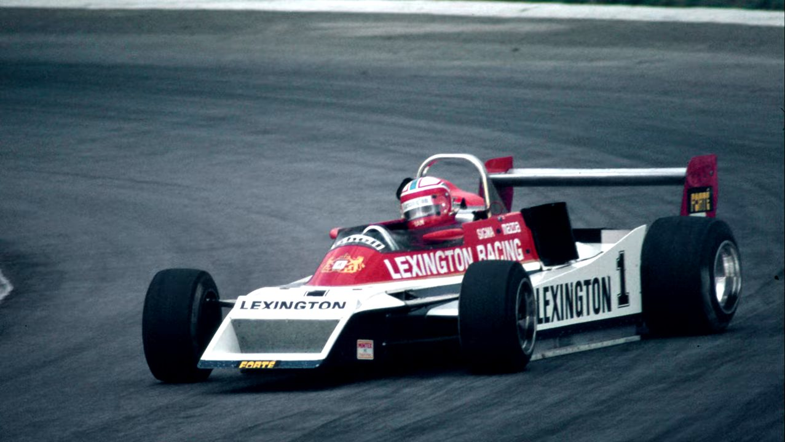

Motorsport / Rivalry
F1, rally and rivalries: untold stories, part two
Sarel van der Merwe and Ian Scheckter pick the conversation back up: single seaters versus silhouette cars, a bent racing licence at eighteen, and the wheel-to-wheel rivalry both call the best racing of their careers.

Part two picks up where part one left off, with Sarel van der Merwe and Ian Scheckter comparing notes on the two very different disciplines that defined their careers. Both concede the other would likely have had the edge in his own preferred category: Scheckter admits van der Merwe might have beaten him in the bigger, heavier touring cars, and van der Merwe admits the reverse in a single seater. Scheckter raced single seaters, where he says everything has to be precise and lightweight, built around a purity rally never demanded. Van der Merwe, who came up through rally before moving into the silhouette touring cars of the 1980s, is more blunt about the bigger cars: "I called it racing a bus." Scheckter frames the ideal matchup as putting them both in identical equipment, a pair of Lotus 72s rather than one man's V8 and the other's rally-bred silhouette car, so the argument over who was actually faster could finally be settled on equal terms; van der Merwe, predictably, would rather keep the V8, a small, good-natured disagreement that says as much about the two of them as any of the actual results from forty years ago. Neither man treats his career as something that stopped. Van der Merwe raced competitively as recently as two years before this conversation, in Pretoria, and more recently agreed to a guest drive in someone else's poorly handling car purely as a favour, working out what was wrong with the setup over the course of the day and handing it back fixed. Weeks before this recording he did a few laps at Killarney in one of the cars there and came away telling his wife he needed to race again, a reaction he says nearly gave her a heart attack.
A licence, bent into existence
Both men were racing before they were legally old enough to. South Africa's licensing age was 18, and Scheckter got around it with help from a local official named Colin Fanoe, who went on to become chairman of South African motorsport. Wanting a licence to race a 100cc bike, Scheckter left his identification at home, whether by accident or design he doesn't fully clarify, and talked Fanoe into issuing him a weekend racing licence on trust, on the promise he would bring proper documentation the following week. The paperwork that eventually came back from the licensing office recorded his motorbike licence number but never specified the bike itself. "That's how I got away with my racing licence," he says.
Scheckter's brother is 1979 Formula 1 world champion Jody Scheckter. Both brothers started out on motorbikes: Ian got a decent bike at 18, but by the time Jody turned 18 the family couldn't find one, so Jody, then working as an apprentice for their father, built his own from a rented R8. The paths that followed diverged sharply from that same starting point, one brother's motorbike leading toward a factory Formula 1 seat and a world title, the other's toward decades in South African single-seaters and silhouette cars, a difference of circumstance and timing as much as anything else, by Ian's own account.
An engine that blew on the first flying lap
South Africa's own Formula 1 Grand Prix meant European teams already knew the country produced serious drivers, helped by the precedent of Dave Charlton, who had gone to race in Europe and struggled at circuits as demanding as Clermont-Ferrand and the Nürburgring, but ran competitively, as high as fourth or fifth at one point, when the championship visited South Africa itself. Scheckter's own break came through phone calls from Williams and, decisively, Hesketh Racing, the best opportunity of the two, in an era with no simulators and no testing before a race weekend: a driver's first laps in the car happened on the actual first flying lap of practice. His started with the Cosworth engine, an engine Scheckter says essentially never fails, failing on him anyway before that first lap was even complete.
He came close to meeting Ayrton Senna once, and deliberately didn't. Offered the introduction by Joe Ramirez, McLaren's team coordinator at the time, Scheckter turned it down specifically because Senna was his hero: he didn't want a bad day or a curt moment to damage the image he'd built up of him. His wife, Angela, met Senna anyway, and came away with an autograph he signed for her personally. Scheckter describes making the same call years later with Tiger Woods, his golfing hero, at the Presidents Cup, content to watch from a distance rather than risk the encounter.

The best racing of his career
The two spent years as genuinely evenly matched wheel-to-wheel rivals, close enough that one race between them, still on YouTube in full, is remembered by both as a highlight worth revisiting. They traded wins back and forth over what Scheckter calls, laughing, "a million years": one race to van der Merwe, the next to Scheckter, running near-identical lap times race after race.
"For actual wheel-to-wheel racing, the racing I had with Sarel was, for me, the best. Most enjoyable."
What made it work, both agree, is that they were friends before, during and after every race, something Scheckter admits should have worked against them in a sport built on rivalry. "We never touched, never ever," van der Merwe says of their closest battles, before Scheckter corrects him: there were a few bumps, and at least one real crash between them, all still on record. The friendship survived every one of them, and endures today, which both men treat as more unusual than the rivalry itself: two competitors who spent four seasons genuinely trying to beat each other, on tracks with none of the run-off or safety margin modern racing takes for granted, without it curdling into the kind of lasting resentment that ends other racing friendships.
Neither man talks about retirement in the past tense. Scheckter spent roughly a decade after moving to Johannesburg doing track days in a Ferrari 360 Challenge car, still chasing a faster, cleaner lap every session, wearing through more tyres and brakes than the organisers would have liked from someone technically retired. Both are still around cars, still get asked to test and set up other people's builds, and both, in their late seventies, describe racing as something that never actually leaves. Part one has the full story of how two rivals became Daytona teammates, and the hot lap challenge that closes out the conversation.